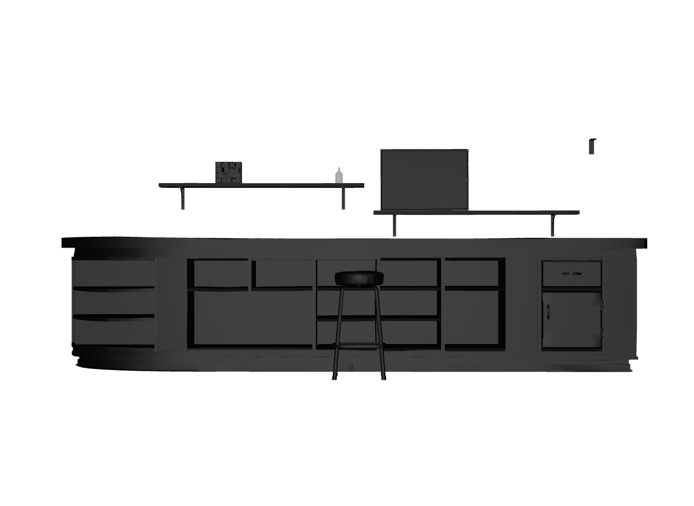
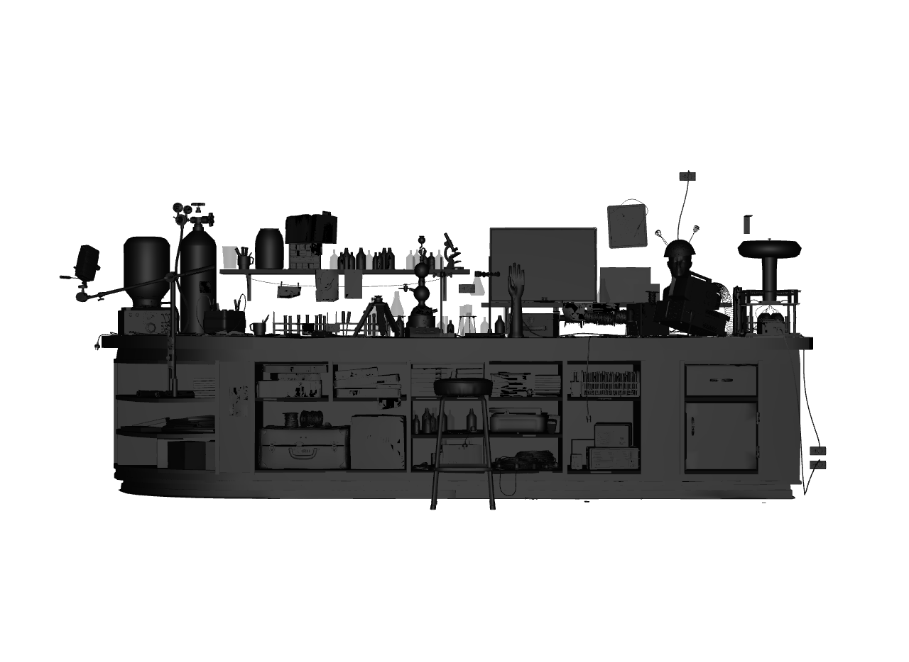

weft pull bottle_0004 --follow Mount —
the bottle and what it stands on. The other 163 threads aren't gone; they're
declared at the boundary.Pull the thread, not the world.
A resolution layer for OpenUSD. Opening a stage means loading everything
and drilling down; weft inverts that — stand at any point, named by identity,
role, attribute, or place, and pull only the threads you care about. A thread is
any relationship: a material binding, a mount contract, electrical:feeds,
or a kind your team defines. Hierarchy is just one thread on the spool.
weft pull 'where:finish=translucent' — twenty-six pieces of
glassware at their exact production transforms, from a scene that was never loaded.
No path appeared in the question. Rendered with stock usdrecord from a
weft mask; this exact pull is asserted in the test suite against a hand-built
reference, placement for placement.

weft pull bottle_0004 --follow Mount —
the bottle and what it stands on. The other 163 threads aren't gone; they're
declared at the boundary.weft pull id:hero-car # identity — survives restructures
weft pull id:occ:weld-47 # one placement, restructure-proof
weft pull role:propSocket # by contract role
weft pull 'where:finish=translucent' # by attribute
weft pull 'near:id:rack-R42,5' # within 5 units of a thing, by name
weft pull b01 --follow up:electrical:feeds*8 # trace upstream, 8 hops
weft pull path:/root/shelf01/b_0004 # location — the fallback, not the default
weft who 'name:glass' --context shot.usda # what depends on this prim?--follow Mount; the other 163 threads declared at the boundary.Everything composes and renders through unmodified stock USD — the images above
came from the usdrecord binary that ships with macOS. Masks, payloads,
LoadNone: USD's own machinery, fed by weft's answers. Every persistent
artifact is real USDA; contracts are codeless applied schemas; nothing is ever
re-rooted or rewritten. Deferral, never extraction.
For teams that want ground truth and not just queries, the engine adds a
content-addressed store, immutable revisions, channels, and the measured promotion
gate — offline, serverless, git init-shaped. Packaged as
weft-usd; runs on any USD file with no server and no schema changes.